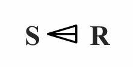
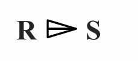
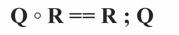
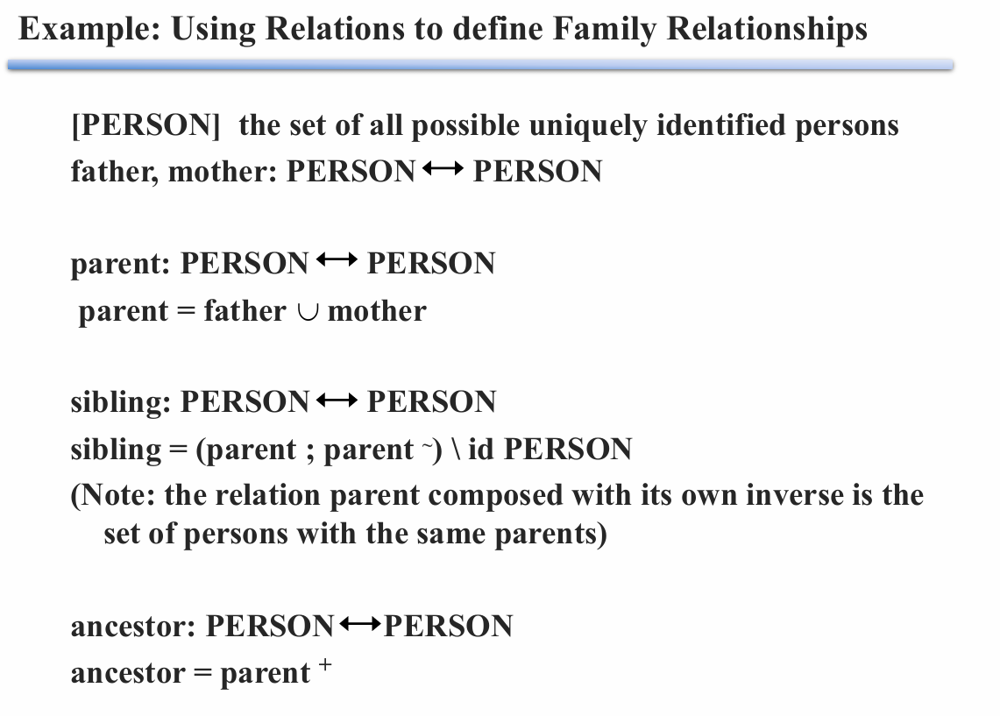
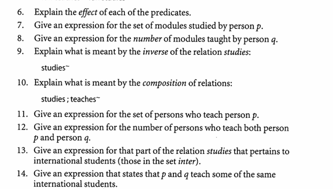
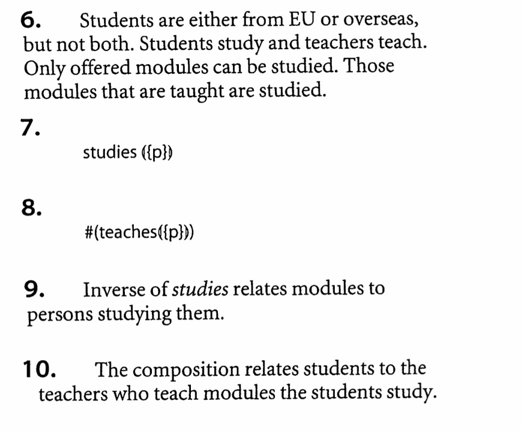
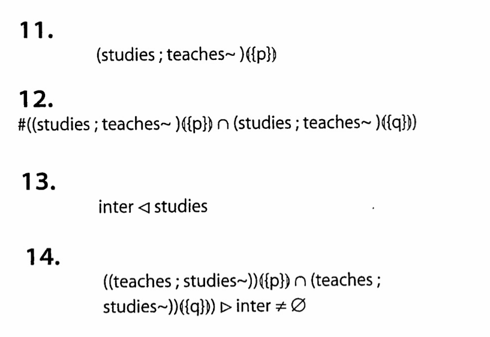

Predicates and Quantifiers in Z
Predicates
谓词
- 0-ary predicates(零元谓词)：命题，事实的陈述，独立于单个变量
- Unary predicates(一元谓词)：对象（个体）的特性
- Binary predicates(二元谓词)：一对对象（个体）的关系，n 元谓词就是 n 组对象（个体）之间的关系
Quantifiers
量词
Universal quantifier \(\forall\) (全称量词 )
- \(\forall\) declaration | constraint · predicate
- declaration 给出一些变量，constraint 约束为确定的值，对于所有值谓词都为真
- | constraint 可省
Existential quantifier \(\exist\) (存在量词)
- \(\exist\) declaration | constraint · predicate
- 对于一些值谓词为真
Unique quantifier \(\exist_1\) (唯一量词)
- 只存在一个值使得谓词为真
Counting quantifier (计数量词)
- 使谓词为真的值的个数，集合的大小
Set comprehension
集合推导
- 通过给定条件（谓词）来定义集合
- 形式：{declaration | constraint · expression}
- 举例：
- {x: Z | Even(x) · x * x} 偶数的平方的集合
- {x: Z · x * x} 整数的集合
Relations in Z
Declaring a relation
-
source（from-set）\(\leftrightarrow\) target（to-set）
-
类型集合 X 到类型集合 Y 的关系：R: X \(\leftrightarrow\) Y（X \(\leftrightarrow\) Y == P(X \(\times\) Y)）
-
举例：
[COUNTRY] 国家集合
[LANGUAGE] 语言集合
speaks: COUNTRY \(\leftrightarrow\) LANGUAGE
Maplets
- maplet x \(\rightarrow\) y == (x, y) 意为 x 和 y 有关（x is related to y，x map to y）
- x R y == x \(\rightarrow\) y \(\in\) R == (x, y) \(\in\) R
- 举例：GB \(\rightarrow\) English \(\in\) speaks == (GB, English) \(\in\) speaks
Domain and Range of a relation
关系的域 Domain 和范围 Range（定义域、值域）
- R: X \(\leftrightarrow\) Y（X \(\leftrightarrow\) Y == P(X \(\times\) Y)）
- dom R == {a | (\(\exist\)b)((a, b) \(\in\) R)}, dom R \(\subseteq\) X
- ran R == {b | (\(\exist\)a)((a, b) \(\in\) R)}, ran R \(\subseteq\) Y
Relational image
- R(|S|)：S 在关系 R 下的像，S 在 R 中关系的像
- S 是 R 定义域的子集，R(|S|) 是 S 对应的值的集合，是 R 值域的子集
Infix relations
中缀关系
其实指的就是两个元素之间书写的关系符号，比如说 + ，- 等这些都是常见的中缀关系符号。
- 写法：_ R _ : X \(\leftrightarrow\) Y
- 举例： speaks: COUNTRY \(\leftrightarrow\) LANGUAGE GB speaks English
Inverse of a relation
- R 的反转：R~
- 举例：if x R y then y R~ x
* 使用关系的举例
其他关系
Domain restriction
定义域 Domain 限制：
- S \(\lhd\) R（S <| R）：关系 R 的定义域限制在 S 内
Range restriction
值域 Range 限制：
- R \(\rhd\) S（R |> S）：关系 R 的值域限制在 S 内
Domain subtraction
定义域 Domain 去除 subtraction：
- S <+ R：关系 R 的定义域去除掉 S (符号如下：)

Range subtraction
值域 Range 去除：
- R +> S：关系 R 的值域去除掉 S

举例：
- EU: PCOUNTRY
EU \(\lhd\) holidays 欧盟国家到他们的假期
EU <+ holidays 非欧盟国家到他们的假期
- summer: PDATE
holidays \(\rhd\) summer 国家到夏天的假期
holidays +> summer 国家到非夏天的假期
Composition
组合
Forward composition：
顺序继承
- R: X \(\leftrightarrow\) Y
- Q: Y \(\leftrightarrow\) Z
- R ; Q: X \(\leftrightarrow\) Z
Backward composition：
逆顺序继承
- 
repeated composition：
重复合成
- R: X \(\leftrightarrow\) X（x R x）
- R ; R: X \(\leftrightarrow\) X（x R\(^2\) x）
- 总的来说 \(x R^+ y\) 表示联系x，y的关系R中有repeated composition
Identity relation
恒等关系
id X == {x: X · x \(\rightarrow\) x}
Transitive closure
传递闭包
传递闭包 R\(^+\)：x R\(^+\) y（x 到 y 有 repeated composition）
Reflexive Transitive closure
自反传递闭包
repeated composition = R\(^*\) = R\(^+\cup\) id X 包含恒等关系。
x R\(^*\) x 永真，即使 x R x 为假。
* 举例使用关系定义家庭关系

[PERSON] 人
父子（女）关系、母子（女）关系
father, mother: PERSON \(\leftrightarrow\) PERSON
父母和子女的关系
parent: PERSON \(\leftrightarrow\) PERSON
parent = father \(\cup\) mother
兄弟姐妹关系（父母的子女，即 parent 的反关系，最后除去自身到自身）
sibling: PERSON \(\leftrightarrow\) PERSON
sibling = (parent ; parent~) id PERSON
长辈关系（父母、父母的父母……）
ancestor: PERSON \(\leftrightarrow\) PERSON
ancestor = parent\(^+\)
* 例题


